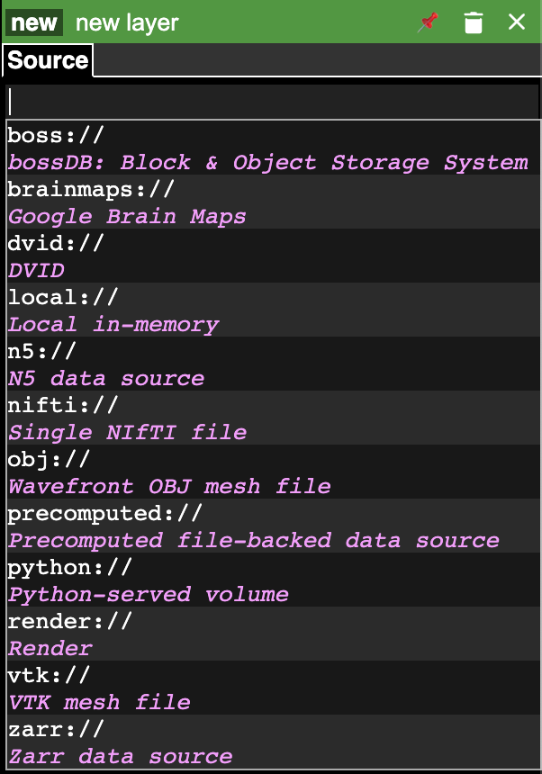
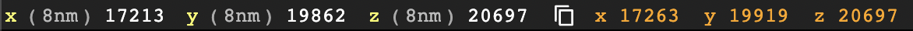
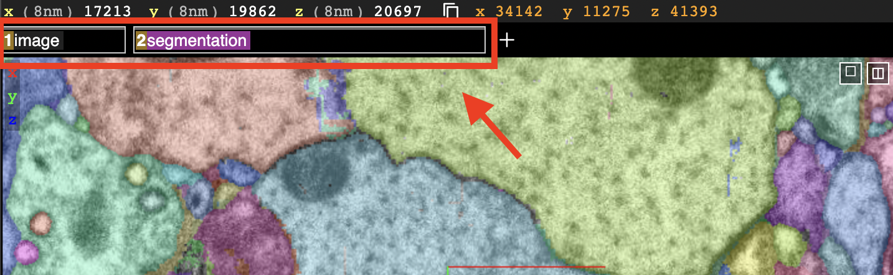
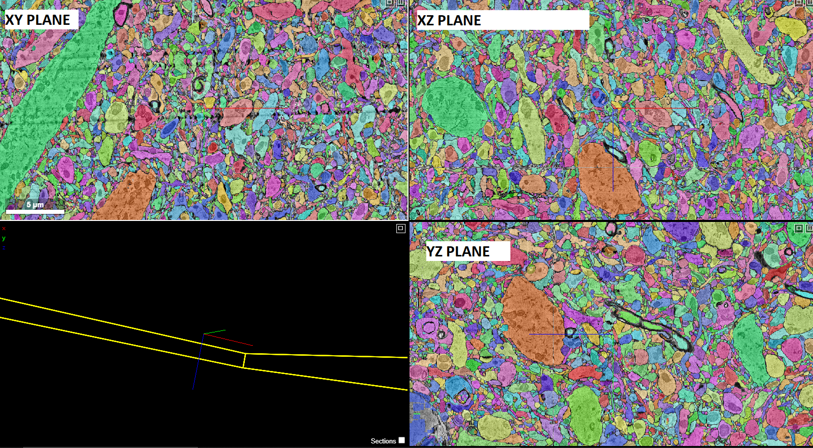
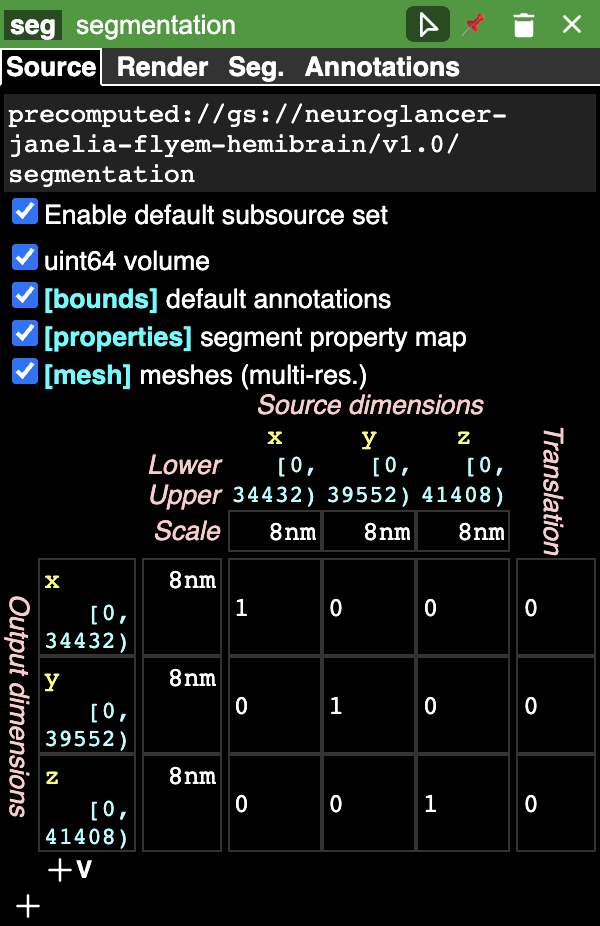
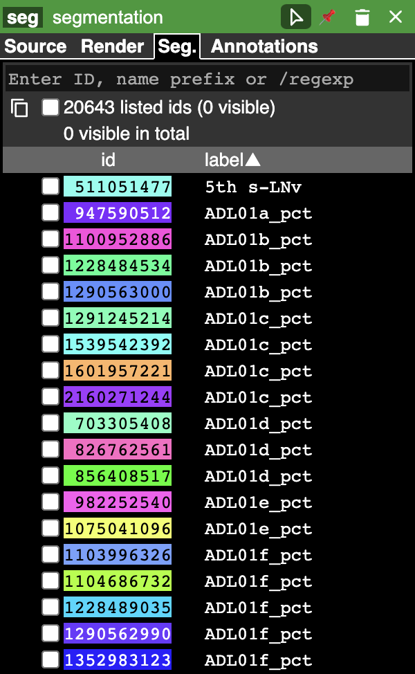
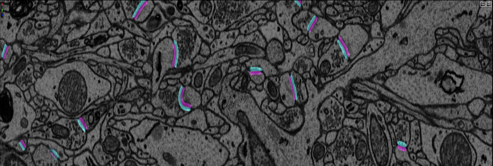
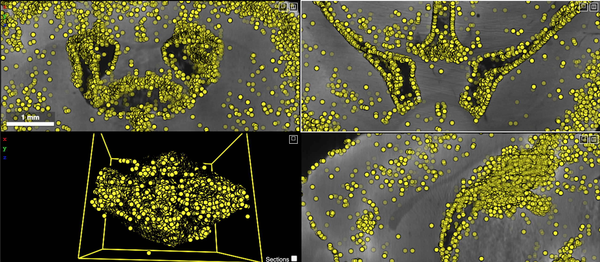

Neuroglancer¶
Introduction¶
Neuroglancer is a high-performance, flexible WebGL-based viewer and visualization framework for volumetric data developed by the Google Connectomics Team. It supports a wide variety of data sources and can display arbitrary (non axis-aligned) cross-sectional views of volumetric data and 3-D meshes and line-segment-based models (skeletons). Neuroglancer is a powerful tool for large-scale neuroscience datasets, which can be impractical to visualize with other traditional image viewer applications.
Note
The tutorial below is only tested with the Google Chrome web browser. You may see different behaviors or errors when using other browsers.
Installation and Quick Start¶
1 - Install neuroglancer a virtual environment¶
Two installation instructions are provided. Installing neuroglancer via Python’s package manager pip is simpler.
If changes to the neuroglancer package or a certain neuroglancer repository is needed, installtion instructions
for building neuroglancer from source are also provided.
In both cases the software is installed in a Python virtual environment. We recommend to use Anaconda. See
this page for steps to create a virtual environment called py3_torch.
# Install neuroglancer using pip in virtual env, which
# is the recommended way to start quickly.
source activate py3_torch
pip install --upgrade pip
pip install neuroglancer imageio h5py cloud-volume
pip install jupyter #(optional) jupyter/ipykernel installation
# build neuroglancer from source (requires nvm/node.js)
mkdir project
cd project
source activate py3_torch
git clone https://github.com/google/neuroglancer.git
cd neuroglancer
curl -o- https://raw.githubusercontent.com/nvm-sh/nvm/v0.39.0/install.sh | bash
export NVM_DIR="$([ -z "${XDG_CONFIG_HOME-}" ] && printf %s "${HOME}/.nvm" || printf %s "${XDG_CONFIG_HOME}/nvm")" \
[ -s "$NVM_DIR/nvm.sh" ] && \. "$NVM_DIR/nvm.sh" # This loads nvm
pip install numpy Pillow requests tornado sockjs-tornado six google-apitools selenium imageio h5py cloud-volume
python setup.py install
2 - Start a local neuroglancer server¶
Create a new (initially empty) viewer. This starts a web server in a background thread, which serves a copy of the Neuroglancer client, and which also can serve local volume data and handles sending and receiving Neuroglancer state updates and print a link to the viewer (only while the script is running). Note that anyone with the link can obtain any authentication credentials that the neuroglancer Python module obtains when the viewer is running.
Note
Users need to start a local neuroglancer server with
python -i [YOUR_SCRIPT].pyor use a jupyter notebook. It cannot be run as a non-interactive python script, i.e., do not usepython [YOUR_SCRIPT].pybecause the server will shut down immediately after running the code.
import neuroglancer
ip = 'localhost' # or public IP of the machine for sharable display
port = 9999 # change to an unused port number
neuroglancer.set_server_bind_address(bind_address=ip, bind_port=port)
viewer = neuroglancer.Viewer()
print(viewer)
Publicly available datasets can be loaded either by navigating to the source tab using the GUI or by using the Python interface. Below is an example to load a public dataset in Python:
import neuroglancer
ip = 'localhost' #or public IP of the machine for sharable display
port = 9999 #change to an unused port number
neuroglancer.set_server_bind_address(bind_address=ip,bind_port=port)
viewer = neuroglancer.Viewer()
with viewer.txn() as s:
s.layers['image'] = neuroglancer.ImageLayer(source='precomputed://gs://neuroglancer-janelia-flyem-hemibrain/emdata/clahe_yz/jpeg/')
s.layers['segmentation'] = neuroglancer.SegmentationLayer(source='precomputed://gs://neuroglancer-janelia-flyem-hemibrain/v1.0/segmentation', selected_alpha=0.3)
print(viewer)
Then copy the printed viewer address to your browser (best with Chrome) to visualize the data.
3 - Using neuroglancer with a local dataset¶
The local dataset can be TIFF or HDF5 formats. In this example we use the SNEMI neuron segmentation dataset for demonstration.
import neuroglancer
import numpy as np
import imageio
import h5py
ip = 'localhost' #or public IP of the machine for sharable display
port = 9999 #change to an unused port number
neuroglancer.set_server_bind_address(bind_address=ip,bind_port=port)
viewer=neuroglancer.Viewer()
# SNEMI (# 3d vol dim: z,y,x)
D0='./'
res = neuroglancer.CoordinateSpace(
names=['z', 'y', 'x'],
units=['nm', 'nm', 'nm'],
scales=[30, 6, 6])
print('load im and gt segmentation')
im = imageio.volread(D0+'train-input.tif')
with h5py.File(D0+'train_label.h5', 'r') as fl:
gt = np.array(fl['main'])
print(im.shape, gt.shape)
def ngLayer(data,res,oo=[0,0,0],tt='segmentation'):
return neuroglancer.LocalVolume(data,dimensions=res,volume_type=tt,voxel_offset=oo)
with viewer.txn() as s:
s.layers.append(name='im',layer=ngLayer(im,res,tt='image'))
s.layers.append(name='gt',layer=ngLayer(gt,res,tt='segmentation'))
print(viewer)
Please note that the mask volume needs to be loaded as a 'segmentation' layer.
Tip
To show the 3D meshes of all segments, print the segment indices in the Python script (use
numpy.unique) and copy it to the segment tab of the corresponding'segmentation'layer. May need to wait a couple of minutes before seeing the rendered 3D meshes.
4 - Loading public datasets in GUI¶
Different datasets are added sequentially. Use the (+) icon located in the upper left corner to add a new layer. It is designed to easily support many different data sources as shown in the image below. We have to select a data source and enter the URL to the data and the layer will be loaded automatically.

After adding the source we have to select the type of the layer that is loaded. Click on the new button and select the type of the layer. List of supported data formats are listed here.
Basic usage¶
This section shows some basic manipulation instructions that will be useful while viewing a dataset in neuroglancer. Here we load the public FlyEM Hemibrain dataset as an example. In the top left corner of the window:

The x/y/z denotes the coordinates of the center of the images displayed in 3D space. In this example, the coordinates are (17213, 19862, 20697).
The numbers inside the parentheses show the resolution of the dataset, in this case each voxel is 8nm x 8nm x 8nm.
The current coordinates of the cursor are displayed in orange and are continously updated as the position of the cursor changes. In this image the cordinates are (17263, 19919, 29697).
You can load and view multiple layers at once:

Currently we have two layers loaded
The image layer (raw images)
The segmentataion layer (segmentation masks)
The two different tabs marked in the image shown above represent the loaded layers. We can switch them on and off by (left) clicking on their respective names.
You can view all three orthogonal views simultaneously in diffrent frames. There is also an additional frame where we can see the 3D meshes. The three frames and model move together in unison. If you make changes in any of the frames (e.g. rotation, 2D/3D translation), the corresponding changes will be updated in all the projections/models. You can also change the view of the screen by clicking on top right corner of any of the 3 frames.

You can (right) click on the layer tab to display its properties panel:

The graphical rendering can be changed depending on what the layer contains in the rendering tab. The segmentation tab (Seg.) appears if the layer is a segmentation:

The bottom half displays all the segment names with their corresponding colors and IDs. The current active segments are also marked. The active segments will be visible in the image and 3D mesh view. A single segment can be activated by either double clicking it or by selecting it from the list in the bottom half of the segmentation tab in the properties pane. We can change the opacity and saturation of the selected/non-selected segments from the render tab. We can also search for a particular segment name, ID or a /regexp using the search bar at the top of the segment pane. Selecting a single segment shows the segment on the orthagonal frames in its respective color and also renders a 3D mesh.
Some other commonly used commands include:
zooming in/out (cltr + mousewheel)
scrolling through the planes (mousewheel)
selecting a segment (double click)
snapping back to initial position (‘Z’ key)
translating (left click and drag)
The above and other available commands can be seen in the help menu which can be accessed by pressing ‘H’ key.
Additional examples¶
1. Load a mesh layer¶
import neuroglancer
ip = 'localhost' #or public IP of the machine for sharable display
port = 9999 #change to an unused port number
neuroglancer.set_server_bind_address(bind_address=ip,bind_port=port)
viewer = neuroglancer.Viewer()
with viewer.txn() as s:
s.layers['image'] = neuroglancer.ImageLayer(source='precomputed://gs://neuroglancer-fafb-data/fafb_v14/fafb_v14_clahe')
s.layers['mesh'] = neuroglancer.SingleMeshLayer(source='vtk://https://storage.googleapis.com/neuroglancer-fafb-data/elmr-data/FAFB.surf.vtk.gz')
print(viewer)
2. Show indices of active segments¶
This code outputs the currently selected layers. The code can be added to a python script or run as a python notebook codeblock.
# assume a viewer with a 'segmentation' layer is created
import numpy as np
import time
while True:
print(np.array(list(viewer.state.layers['segmentation'].segments)))
time.sleep(3) # specify an interval
3. Custom Actions¶
Custom actions can be added to the neuroglancer viewer object. The following code shows how to register a custom action to a key press.
# assume a viewer with is already created
import numpy as np
def action(action_state):
# do something
viewer.actions.add('custom_action', action) # register the function as neuroglancer action
with viewer.config_state.txn() as s:
s.input_event_bindings.viewer['shift+mousedown0'] = 'custom_action' # the function will be called on pressing shift+left mouse button
Neuroglancer will provide the custom function with an ActionState object. This object contains the current mouse position in voxels, a ViewerState object
that contains information about the current state of the viewer and a dictionary of selected_values which contains information about the options selected for
each layer in the viewer. The next section has a simple example about how to log mouse position using a custom action.
4. Display mouse position¶
This code can be used to display the current mouse position as a point annotation. It also logs the mouse position in voxel space, and
the selected object (if there is a 'segmentation' layer in the viewer) to the terminal. The action is triggered if the key L is pressed.
The code can be added to a Python script or run as a Python notebook codeblock.
# assume a viewer with is already created
import numpy as np
with viewer.txn() as s:
s.layers['points'] = neuroglancer.LocalAnnotationLayer(dimensions=res)
num_actions = 0
def logger(s):
global num_actions
num_actions += 1
with viewer.config_state.txn() as st:
st.status_messages['hello'] = ('Got action %d: mouse position = %r' %
(num_actions, s.mouse_voxel_coordinates))
print('Log event')
print('Mouse position: ', np.array(s.mouse_voxel_coordinates))
print('Layer selected values:', (np.array(list(viewer.state.layers['segmentation'].segments))))
with viewer.txn() as s:
point = np.array(s.mouse_voxel_coordinates)
point_anno = neuroglancer.PointAnnotation(
id=repr(point),
point=point)
s.layers['points'].annotations = [point_anno]
viewer.actions.add('logger', logger)
with viewer.config_state.txn() as s:
s.input_event_bindings.viewer['keyl'] = 'logger'
s.status_messages['hello'] = 'Add a promt for neuroglancer'
5. Re-render a layer¶
If changes are made to a neuroglancer layer through custom actions, the layer needs to be re-rendered for the changes to be visible
in the viewer. To re-render a layer simply call the invalidate() function on a LocalVolume object
# assume a viewer with is already created
mesh_volume = neuroglancer.LocalVolume(
data=data, dimensions=res)
with viewer.txn() as s:
s.layers['mesh'] = neuroglancer.SegmentationLayer(
source=mesh_volume)
# do something ...
# re-renders the 'mesh' layer in viewer
mesh_volume.invalidate()
6. Using custom shaders with images¶
Neuroglancer allows using custom shaders to control how an image layer appears in the viewers rather than simple black and white. The following code snippet shows how to render an image layer with the Jet colormap.
# assume a viewer with is already created
data_volume = neuroglancer.LocalVolume(
data=data, dimensions=res)
with viewer.txn() as s:
s.layers['image'] = neuroglancer.ImageLayer(
source=data_volume,
shader='''
void main() {
float v = toNormalized(getDataValue(0));
vec4 rgba = vec4(0,0,0,0);
if (v != 0.0) {
rgba = vec4(colormapJet(v), 1.0);
}
emitRGBA(rgba);
}
'''
)
7. Visualize RGB images¶
Sometimes visualizing RGB images (e.g., 3-channel affinity or synaptic polarity prediction) with raw images can be a convenient way for debugging and error analysis. The following code snippet shows an example to display the overlay of gray-scale and RGB images.
# assume a viewer with is already created
# coordinate space for gray-scale volume (z,y,x)
res0 = neuroglancer.CoordinateSpace(
names=['z', 'y', 'x'],
units=['nm', 'nm', 'nm'],
scales=[30, 4, 4])
# coordinate space for RGB volume (c,z,y,x)
res1 = neuroglancer.CoordinateSpace(
names=['c^', 'z', 'y', 'x'],
units=['', 'nm', 'nm', 'nm'],
scales=[1, 30, 4, 4])
def ngLayer(data,res,oo=[0,0,0],tt='segmentation'):
return neuroglancer.LocalVolume(data,dimensions=res,volume_type=tt,voxel_offset=oo)
with viewer.txn() as s:
# im: 3d array in (z,y,x). im_rgb: 4d array in (c,z,y,x), c=3
s.layers.append(name='im',layer=ngLayer(im,res0,tt='image')),
s.layers.append(name='im_rgb',layer=ngLayer(im_rgb,res1,oo=[0,0,0,0],tt='image'),
shader="""
void main() {
emitRGB(vec3(toNormalized(getDataValue(0)),
toNormalized(getDataValue(1)),
toNormalized(getDataValue(2))));
}
"""
)
print(viewer)

Visualization of EM images overlay with synaptic polarity prediction. See synapse detection for details.
8. Visualize Point Annotations¶
Quite often, it is necessary to visualize point annotations in a 3D volume of a microscopy image. These points for instance could denote centroids of segment masks of nuclei or synapses. The following code can be used to perform such an action.
# assume a viewer with is already created
# here, assume that we are loading the 3D coordinates from a text file
points = np.genfromtxt(fname='fixed.txt', delimiter=' ', dtype='uint8')
counter = 0
with viewer.txn() as s:
# define an annotation layer
s.layers['annotation'] = neuroglancer.AnnotationLayer()
annotations = s.layers['annotation'].annotations
# each point annotation has a unique id
for (x, y, z) in points[::10]:
pt = neuroglancer.PointAnnotation(point=[x, y, z], id=f'point{counter}')
annotations.append(pt)
counter += 1
# image layer
s.layers.append(name='im', layer=ngLayer(im, res, tt='image'))
print(viewer)


{kind=link}
{kind=link}
{kind=link}
{kind=link}